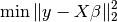
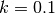
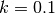
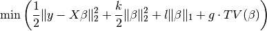
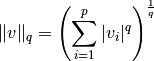
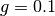
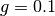

General framework¶
Parsimony comprise three principal parts: algorithms, functions and estimators.
- functions defines the loss functions and penalties, and combination of
those, that are to be minimised. * algorithms defines minimising algorithms (e.g., Fast Iterative Shrinkage-Thresholding Algorithm (FISTA) [FISTA2009], COntinuation of NESTerov’s smoothing Algorithm (CONESTA), Excessive Gap Method, etc.) that will be used to minimise a given function. * estimators defines a combination of functions and an algorithm.
Parsimony currently comprise the following parts:
- Functions
- Loss functions
- Linear regression
- Logistic regression
- Penalties
- L1 (Lasso)
- L2 (Ridge)
- Total Variation (TV)
- Overlapping group lasso (GL)
- Loss functions
- Algorithms
- Iterative Shrinkage-Thresholding Algorithm (ISTA)
- Fast Iterative Shrinkage-Thresholding Algorithm (FISTA)
- COntinuation of NESTerov’s smoothing Algorithm (CONESTA)
- Excessive Gap Method
- Estimators
- LinearRegression_L1_L2_TV
- RidgeRegression_L1_TV
- RidgeLogisticRegression_L1_TV
- RidgeLogisticRegression_L1_GL
- RidgeRegression_SmoothedL1TV
Build Simulated Dataset¶
We build a simple simulated dataset as  :
:
import numpy as np
np.random.seed(1)
# Three-dimensional matrix is defined as:
shape = (4, 4, 4)
# The number of samples is defined as:
num_samples = 50
# The number of features per sample is defined as:
num_ft = shape[0] * shape[1] * shape[2]
# Define X randomly as simulated data
X_raw = np.random.random((num_samples, shape[0], shape[1], shape[2]))
X = np.reshape(X_raw, (num_samples, num_ft))
# Define beta randomly
beta = np.random.rand(num_ft, 1) * 2.0 - 1.0
beta = np.sort(beta, axis=0)
beta[np.abs(beta) < 0.2] = 0.0
# Define y by adding noise
y = np.dot(X, beta) + 0.1 * np.random.randn(num_samples, 1)
In later sessions, we want to discover  using different loss
functions.
using different loss
functions.
Linear regression + L1 + L2 + TV¶
Knowing  and
and  , we want to find by
minimizing the OLS loss function by FISTA:
, we want to find by
minimizing the OLS loss function by FISTA:

import parsimony.estimators as estimators
import parsimony.algorithms.explicit as algorithms
import parsimony.functions.nesterov.tv as tv
k = 0.0 # l2 ridge regression coefficient
l = 0.0 # l1 lasso coefficient
g = 0.0 # tv coefficient
A, n_compacts = tv.A_from_shape(shape) # Memory allocation for TV
ols_estimator = estimators.RidgeRegression_L1_TV(
k, l, g, A,
algorithm=algorithms.FISTA(max_iter=1000))
res = ols_estimator.fit(X, y)
print "Estimated beta error =", np.linalg.norm(ols_estimator.beta - beta)
We add an  constraint with ridge regression coefficient
.
constraint with ridge regression coefficient
.

where the  -norm is defined as
-norm is defined as

import parsimony.estimators as estimators
import parsimony.algorithms.explicit as algorithms
import parsimony.functions.nesterov.tv as tv
k = 0.1 # l2 ridge regression coefficient
l = 0.0 # l1 lasso coefficient
g = 0.0 # tv coefficient
A, n_compacts = tv.A_from_shape(shape)
ridge_estimator = estimators.RidgeRegression_L1_TV(
k, l, g, A,
algorithm=algorithms.FISTA(max_iter=1000))
res = ridge_estimator.fit(X, y)
print "Estimated beta error =", np.linalg.norm(ridge_estimator.beta - beta)
Similarly, you can add an  constraint and a TV constraint with
coefficients
constraint and a TV constraint with
coefficients  and 
and 
import parsimony.estimators as estimators
import parsimony.algorithms.explicit as algorithms
import parsimony.functions.nesterov.tv as tv
k = 0.0 # l2 ridge regression coefficient
l = 0.1 # l1 lasso coefficient
g = 0.1 # tv coefficient
A, n_compacts = tv.A_from_shape(shape)
estimator = estimators.RidgeRegression_L1_TV(
k, l, g, A,
algorithm=algorithms.FISTA(max_iter=1000))
res = estimator.fit(X, y)
print "Estimated beta error =", np.linalg.norm(estimator.beta - beta)
Algorithms¶
We applied FISTA ([FISTA2009]) in the previous sections. In this section, we switch to Dynamic CONESTA and Static CONESTA to minimise the function.
import parsimony.estimators as estimators
import parsimony.algorithms.explicit as algorithms
import parsimony.functions.nesterov.tv as tv
k = 0.0 # l2 ridge regression coefficient
l = 0.1 # l1 lasso coefficient
g = 0.1 # tv coefficient
Atv, n_compacts = tv.A_from_shape(shape)
tvl1l2_conesta_static = estimators.RidgeRegression_L1_TV(
k, l, g, Atv,
algorithm=algorithms.StaticCONESTA())
res = tvl1l2_conesta_static.fit(X, y)
print "Estimated beta error =", np.linalg.norm(tvl1l2_conesta_static.beta - beta)
tvl1l2_conesta_dynamic = estimators.RidgeRegression_L1_TV(
k, l, g, Atv,
algorithm=algorithms.DynamicCONESTA())
res = tvl1l2_conesta_dynamic.fit(X, y)
print "Estimated beta error =", np.linalg.norm(tvl1l2_conesta_dynamic.beta - beta)
Excessive gap method¶
The Excessive Gap Method currently only works with the function
“RidgeRegression_SmoothedL1TV”. For this algorithm to work,  must be
positive.
must be
positive.
import scipy.sparse as sparse
Atv, n_compacts = tv.A_from_shape(shape)
Al1 = sparse.eye(num_ft, num_ft)
k = 0.05 # ridge regression coefficient
l = 0.05 # l1 coefficient
g = 0.05 # tv coefficient
rr_smoothed_l1_tv = estimators.RidgeRegression_SmoothedL1TV(
k, l, g,
Atv=Atv, Al1=Al1,
algorithm=algorithms.ExcessiveGapMethod(max_iter=1000))
res = rr_smoothed_l1_tv.fit(X, y)
print "Estimated beta error =", np.linalg.norm(rr_smoothed_l1_tv.beta - beta)
References¶
| [FISTA2009] | (1, 2) Amir Beck and Marc Teboulle, A Fast Iterative Shrinkage-Thresholding Algorithm for Linear Inverse Problems, SIAM Journal on Imaging Sciences, 2009 |
| [NESTA2011] | Stephen Becker, Jerome Bobin, and Emmanuel J. Candes, NESTA: A Fast and Accurate First-Order Method for Sparse Recovery, SIAM Journal on Imaging Sciences, 2011 |